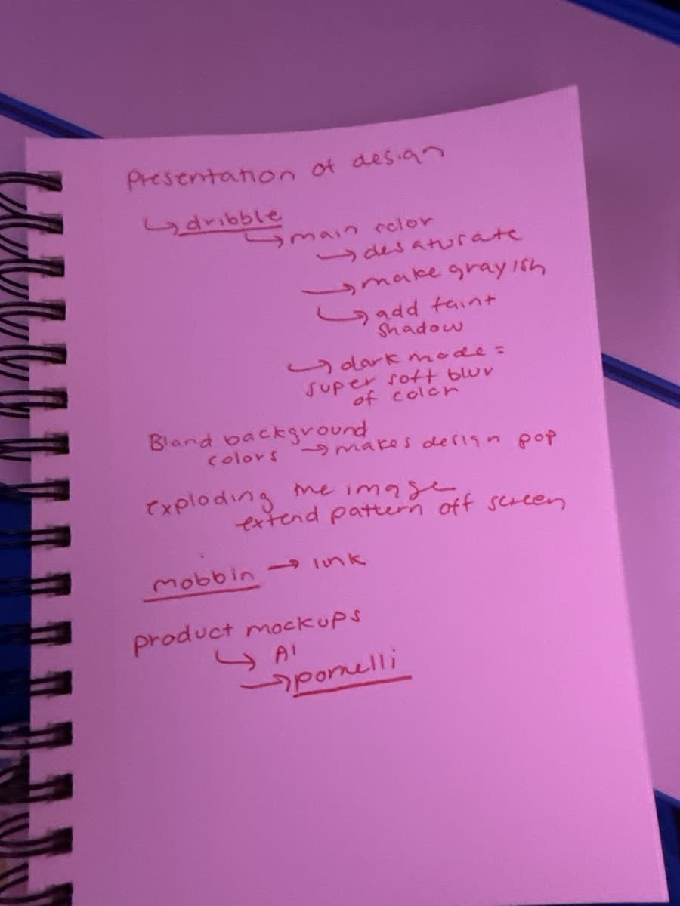
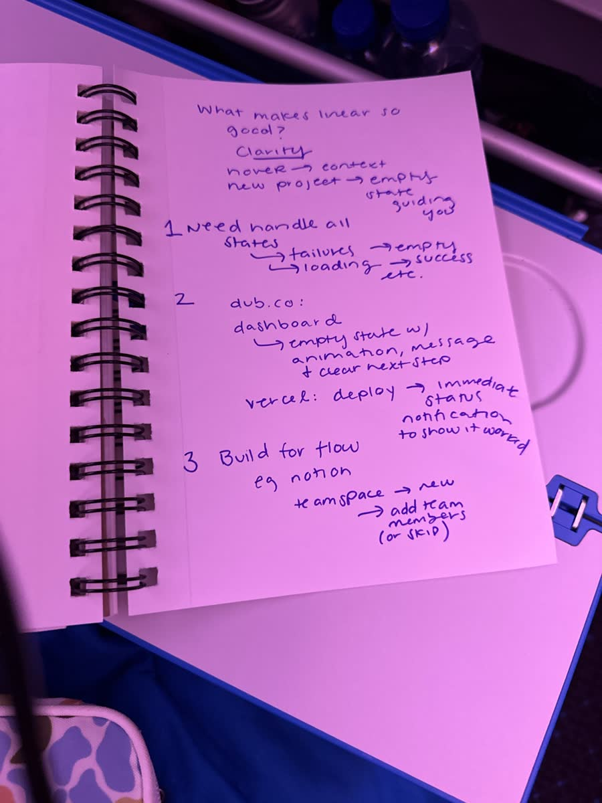
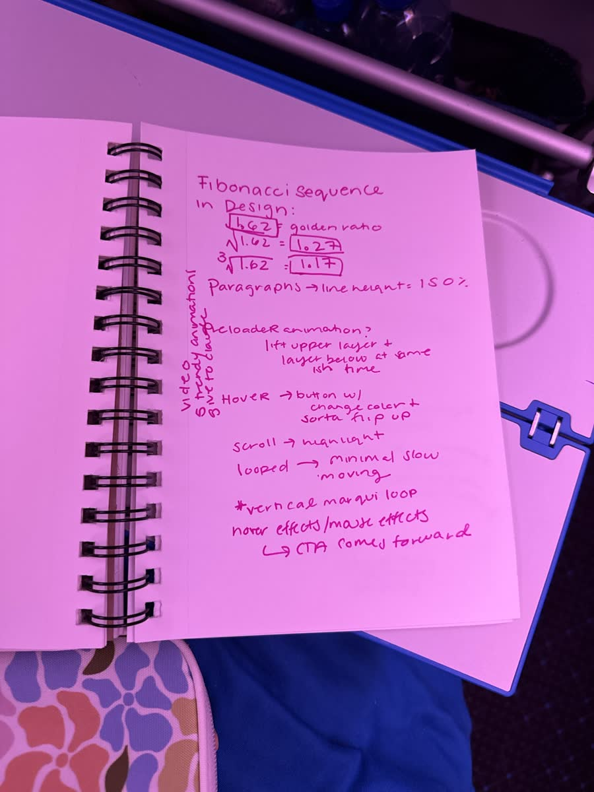

experiment 05 · design desk
drag these
taste
clarity
flow
Design
(a swipe file, kept in public)
I'm learning UI by paying attention. This is where I keep what I
notice: the systems behind my own sites, the libraries I'm building,
the galleries I raid, the videos I rewatch, and the pages from my
notebook.
Browse the shelf
from the notebook
Three pages, transcribed
(red pen, blue pen, pink pen. tap a page to see the real thing.)
page 01 · red pen

Presentation of design
The Dribbble trick for a main color: desaturate it, make it grayish, then add a faint shadow.
Dark mode is a super soft blur of color, not a black slab.
Bland background colors make the design pop.
Exploding an image: let the pattern extend off screen.
Mobbin for real product flows. Link it up.
Product mockups: try AI, try Pomelli.
page 02 · blue pen

What makes Linear so good?
Clarity.
Hover gives you context. A new project gets an empty state that guides you.
1. Handle all the states: failure, empty, loading, success, and the rest.2. dub.co: the empty dashboard has an animation, a message, and a clear next step. Vercel: deploy, and the status shows immediately so you know it worked.3. Build for flow. Notion: new teamspace, add team members, or skip.
page 03 · pink pen

Fibonacci in design
1.618 is the golden ratio. Its square root is 1.27. Its cube root is 1.17.
Paragraphs: line height 150%.
Preloader idea: lift the upper layer and the layer below at almost the same time.
Hover: a button that changes color and sort of flips up.
Scroll: highlight as you go. Loops: minimal and slow moving. A vertical marquee loop.
Mouse effects: the CTA comes forward.
(margin note: find the "5 trendy animations" video, give it to claude)
try the ratios
1.17
1.27
1.618
Display
A heading
Body copy at 150% line height.
small print
my systems
One system per site
(the rules I keep writing down so I stop re-deciding them)
my libraries
Libraries I've been making
(art, fonts, references. the raw material for everything above.)
the shelf
Everything on the shelf
Galleries I raid, sites I study, tools I reach for. Each one has a line on why it is here.
rewatch list · in progress
Videos I keep going back to
(lilac means unfinished. some of these notes are still cooking.)
how it works
How this page fills itself
(the chrome button already existed. it just needed a new job.)
1. clip
Hit the Magpie feather on any page, tag it design, and say why in one line.
2. sync
npm run sync:design pulls every desk-tagged clip into design-library.js.
3. push
Push to main. Vercel deploys, the shelf updates, and the video notes fill in.